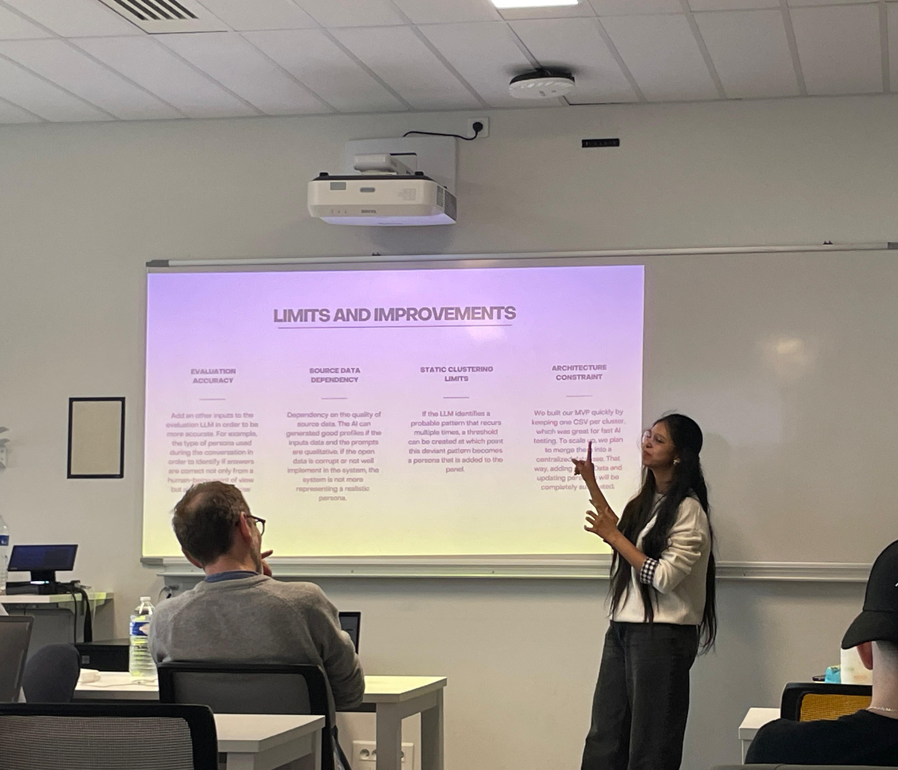

4+ years making sense of how organisations work.
Across healthcare, HR tech, and financial services, I've spent most of my time figuring out why processes break and how to make them better. Now I'm in Paris, adding data analytics to that toolkit.

presenting at KEDGE ✨
bordeaux chapter 🌸
paris chapter ✨
A little about me
📍 Based in Paris, France
MSc Data Analytics for Business
KEDGE Business School, France · 2025–2027
🌍 Languages
I never planned on working in analytics. What interested me was understanding why things weren't working. Why a process kept failing. Why the numbers didn't match. Why one team moved quickly while another got stuck.
I started in healthcare operations, processing claims and writing reports. After a while, I realised I was more interested in how those processes were designed than in just completing the work. So I started paying closer attention to that.
Over time that led me toward process improvement, reporting, and eventually data analytics. I moved to Paris to study at KEDGE because I wanted to get more formal with the data side of things. That's what I'm doing now.
Curiosity got me here. It's still what drives me today.
By the numbers
Years Experience
across 3 industries
Fewer Discrepancies
TriNet & Optum
Faster Resolution
through workflow redesign
Claims / Month
understood, not just processed
Portfolio projects
"Projects with real deliverables: dashboards, SQL, documentation. Things you can open and explore."
Healthcare Operations · SQL · Power BI
01Healthcare Claims Analytics Dashboard
The Problem
Claims teams had no clear view of why denial rates were spiking. Decisions were reactive. Bottlenecks weren't spotted until SLA breaches had already happened.
My Approach
SQL-based data modelling to track claim volumes, denial rates, and root cause categories. Power BI dashboard for operations managers to monitor pipeline health daily and catch at-risk claims early.
↳ "Built from 2+ years inside claims operations. This is lived experience, not sample data."
HR Technology · Excel · Power BI
02HR Operations Analytics Dashboard
The Problem
HR support desks deal with high volumes of employee requests but often have no way to see where tickets are getting stuck, which teams are missing SLA, or where things tend to go wrong.
My Approach
Excel Power Query for data preparation. Power BI for reporting: ticket volumes, resolution time, SLA performance by category, and escalation rates across HRIS environments.
↳ "Turning HRIS operational patterns into decisions."
Project Analytics · SQL · Power BI
03Project Performance Dashboard
The Problem
Project managers and executives had no single view across their portfolio. By the time budget overruns or delays were visible, it was often too late to adjust course.
My Approach
SQL data modelling across budget, timeline, and resource data. Power BI dashboard with RAG status, milestone tracking, burn rate monitoring, and drill-through by project and team.
↳ "Seeing the full picture early makes the difference."
Career journey
"Each role changed something about how I see organisations. Not just what I know how to do."
Legato Health Technologies
Claims Operations Associate
Dec 2020 – Dec 2021 · HyderabadProcessed 500+ Medicare and Medicaid claims a month. The volume was high, but what stuck with me was learning to read the patterns inside it. A COB dispute was rarely just a ticket. It usually pointed to something breaking between two systems upstream.
Northern Trust Corporation
Operations Analyst
Jan – May 2022 · PuneFinancial operations in a tightly regulated environment. Monitored KPIs, prepared exception reports, and reconciled daily transaction data. Precision here wasn't optional. A missed flag meant a real consequence downstream.
Optum Global Solutions
Senior Operations Analyst
Sep 2022 – Jul 2024 · HyderabadAudited 100+ claims weekly across UHC and Aetna portfolios. Built rejection-trend tracking. Delivered SLA and exception reports for three team leads. I started to see that most errors in our workflow weren't random. They came back to the same design gaps, over and over.
TriNet Zenefits
Benefits Operations Administrator
Aug 2024 – Apr 2025 · HyderabadManaged a 50-client HRIS portfolio across 10+ system integrations. Designed standardised escalation workflows. Maintained 100% regulatory accuracy across ACA and COBRA compliance. Reduced processing discrepancies by 20% and improved resolution times by 35%.
KEDGE Business School 🇫🇷
MSc Data Analytics for Business
Aug 2025 – Feb 2027 · Bordeaux, FranceI moved to France to study at KEDGE because I wanted to build the data side of my work more formally. Studying in Bordeaux, now based in Paris. The courses are covering SQL, Python, Azure ML, and business strategy. It's the right next step for where I want to go.
Why teams hire me
I've worked in healthcare, HR tech, and financial services. Different industries, but often the same challenge: understanding what's causing problems and finding practical ways to fix them.
I Like Finding the Cause
Most operational issues don't appear out of nowhere. I enjoy digging into processes, spotting where things break down, and understanding what's really causing the problem.
↳ Often the issue isn't where it first appears.
I Improve the Way Work Gets Done
I've worked on reducing discrepancies, improving turnaround times, and creating clearer workflows. Small process changes can make a big difference when they're applied in the right place.
↳ Good processes make everyone's job easier.
I Turn Data Into Decisions
I use reporting and dashboards to help teams understand what's happening and where attention is needed. The goal isn't more data. It's better decisions.
↳ Numbers are useful when they lead to action.
I Work Across Teams
Many operational problems happen between teams, systems, or handoffs. I'm comfortable working with different stakeholders and connecting information across functions.
↳ Most bottlenecks hide between teams, not inside them.
Skills & tools
Operational Problem Solving
what I do when things break
Analysis & Reporting
how I make patterns visible
Domain Knowledge
industries I've worked inside
Working With People
how I work alongside teams
Growing In
what this chapter is adding
Certifications
learning on purpose
Education
KEDGE Business School, France
MSc Data Analytics for Business
Bordeaux & Paris · 2025–2027
Dr. B.R. Ambedkar Open University
Master of Commerce
Accounting & Finance · 2021–2023
Andhra Mahila Sabha
Bachelor of Commerce
Business & Commerce · 2017–2020
Let's connect
✈ Posted from Paris, France
To: Future Team
✦ break the seal to open ✦
Dear Hiring Manager,
Before you go, can we have a quick conversation? Whether it's about a role, a project, or simply exchanging ideas, I'd love to connect.
Looking forward to hearing from you.
Vigneshwari Nalla 🌸
Based in Paris · Open to opportunities across France & the EU 🌸